Created Tuesday16 June 2020
We just finished Lines and Planes and now we're onto our last topic of vectors. Soon, we shall be learning about derivatives.
Linear Functions
Linear Functions will be the main topic of today. But what are they?
Take a vector space like so:
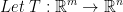
This reads that T is a function that takes a vector space m and produce a vector space n.
Def: We say that T is a Linear function iff, for any 2 vectors u, v and any 2 real numbers λ , μ, we get the following:
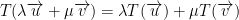
This reads, "λ times the image of u plus μ times the image of v." Note the word image.
Please note! If we can't separate our variables as we did above, then we do not have a linear function between two vector space! Otherwise, we do have one.
So then, a linear function respects the scalar product along with the addition of our vectors.0
This implies that T(3u) = 3T(u). Also, that T(u + v) = T(u) + T(v).
So T is a linear function if it respects the sum and scalar multiplication of of vectors.
Sum goes to the sum of the image.
Scalar multiple goes the the scalar multiple of the image.
So then, our  should be able to do the above 2 things.
should be able to do the above 2 things.
However! The scalar product of  is not the same as the scalar multiplication of
is not the same as the scalar multiplication of  . m and n is different afterall.
. m and n is different afterall.
Likewise, the addition and scalar multiplication on the left and right sides of the equal sign of the equation below are not the same!

Yes, we separated our vectors and scalars n' whatnot out but the addition and scalar multiplication on both sides are not the same.
Properties of Linear Functions
1) If T is a linear function then we have the following:
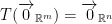
In other words, the 0 vector of the Rm gives us the 0 vector of Rn.
How do we prove this?
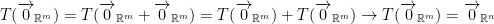
2) He says this second one is very important. We'll need it a lot of the time in the future.
A function 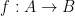 is one-to-one iff 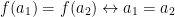
The A -> B reads, "from space A to B."
Also, if the image maps to the same value then the only way for this to happen in 1-1 (one-to-one) is if they were fed the same value.
Continuing on:
If  is 1-1 then this is equivalent to the following proposition:
is 1-1 then this is equivalent to the following proposition:
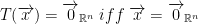
In other words, if we have a linear function and the only vector that goes to the Rn 0 vector is the Rm 0 vector, then your function is 1-1.
Once again, if there's only one way we can get to Rm's 0 vector is via the 0 vector in Rn, then we have a 1-1 function!
Proof:
We want to prove that T is 1-1.
i.e., if 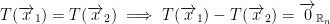
but T is Linear so we also get the following:
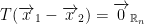
The above implies from hypothesis that:
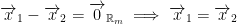
We assume that T is 1-1. We shall prove that the only element that goes to 0 is 0.
Let 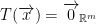
SInce T is linear from property 1 we know that:
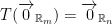
So, 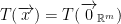. But T is 1-1, this implies that 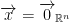
3) 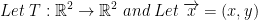
Remember, any vectors can be written as a linear combination of the vectors of the base (remember, i, j, and k like when we find the cross product).
So then also let us have 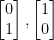 be the natural basis of R2.
Then 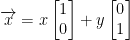. Now if T is a linear function, then:
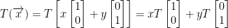
So, we have x times the image of the first basis. Then we add that to y times the image of the second basis.
He then also writes that we have this:
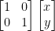
Theorem from Linear Algebra
If 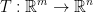 is a Linear function and 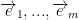 is a basis of Rm, then if:
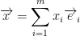
We have:
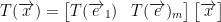
By the way, each T(ei) from 1 to m is a column. As such, we will have m columns. One for each image of the base as per we see with e. Likewise, we will have n rows!
So then, we shall multiply our mxn matrix by our x vector. How many rows does our x have? Think about it... It's m. It has m rows.
What this all boils down to is that any time we have a linear function, we can instead write a matrix. Remember how we separated everything out with plus signs manually when we went over the function T earlier? Well, we can simplify that into just making it a matrix as we just saw. Useful!
Example:
Consider the following function:
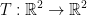
given by 
1) First we must check if T is Linear.
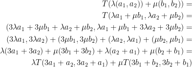
After all of this, the professor exclaims that yes, it is linear.
Despite his indepth proof, it's still a little mysterious to as of just what happened here. I'm wrapping my head around it still. If anything, we showed that the scalar multiplication and the addition holds with the function we defined at the beginning of this example. Therefore, it is a linear function.
2) Check that the elements:
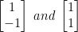
form a basis in R2.
So, we just need to prove that they are linearly independent. Let us refer to them as v1 and v2.
As you may remember, for our vectors to be linearly independent they need to add to a 0 vector. Not only that, the only way for them to add to a zero vector is when they are both multiplied by a scalar of 0. If we can multiply them by anything else and have them add to a 0 vector, then they are not linearly independent. With that in mind, we have the following:
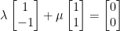
This implies that:
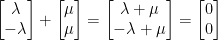
The above them implies the following two statements:
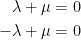
Last but not least, we now have this implication:
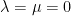
As such, yes, they are linearly independent!
Because we have only two and the dimension of the space is two, they form a basis.
So how do we write as a matrix?
Okay, we've gone through a lot and proved that the original function was indeed a linear function. Hurray! But we're not done yet...
How do we find the matrix of T relatively to the given basis?
Remember, this is our function: 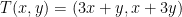
Also, we are working with the vectors (1, -1) and (1, 1) as we did in part two of the example above.
Let us begin as follows:
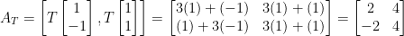
And there we have it! That's the corresponding matrix to our linear function!
Don't believe me? Well, we can check it too! Observe:
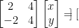
Mistakes
Apparently he made a mistake. The matrix is all off. We should have instead have the following:
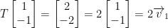
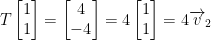
So then, we have:
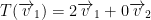
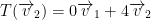
When we write the column, then we get:
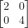
We can then check it like so:
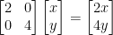
I'm not quite sure if he got that all right...
The Next Quiz
He says this will be on the last quiz we take but not on the first one.
{kind=link}
{kind=link}
{kind=link}
{kind=link}
{kind=link}
{kind=link}
{kind=link}
{kind=link}
{kind=link}
{kind=link}
{kind=link}
{kind=link}
{kind=link}
{kind=link}
{kind=link}
{kind=link}
{kind=link}
{kind=link}
{kind=link}
{kind=link}
{kind=link}
{kind=link}
{kind=link}
{kind=link}
{kind=link}
{kind=link}
{kind=link}
{kind=link}
{kind=link}
{kind=link}
{kind=link}
{kind=link}
{kind=link}
{kind=link}
{kind=link}
{kind=link}
{kind=link}
{kind=link}
{kind=link}
{kind=link}
{kind=link}